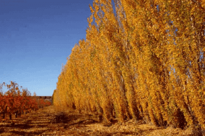

Qué hacer en Trelew
En esta página te mostramos algunas las principales atracciones de la ciudad.Museo Pueblo de Luis
.png)
El Museo Regional Pueblo de Luis es un lugar de guerra civil donde se hizo un museo ubicado en el centro de la ciudad. Está formado por siete salas de exposición que muestran aspectos históricos de Trelew y el Valle inferior del río Chubut, relacionados con los grupos étnicos tehuelches y mapuches y la colonización galesa. También, del surgimiento del Ferrocarril Central del Chubut, otras colectividades de la ciudad y la actualidad, además de testimonios de los viajeros que exploraron las costas patagónicas entre 1520 y 1865. El nombre del museo rinde homenaje a Lewis Jones, uno de los promotores de la colonización galesa en Chubut.
Museo Paleontológico
.png)
El Museo Paleontológico Egidio Feruglio, conocido popularmente como el MEF, es una de las principales atracciones turísticas de Trelew. En los alrededores de esta ciudad, se han hallado multitud de fósiles de dinosaurios de gran tamaño. La mayoría de ellos se exponen en el MEF, considerado como uno de los mejores museos de Sudamérica en este ámbito.
Museo de Artes Visuales
.png)
El Museo Municipal de Artes Visuales es un museo de Bellas Artes ubicado en el centro de la ciudad. Su dinámica está basada en la organización de muestras renovadas mensualmente. Se realizan exposiciones de pintura, dibujo, fotografía escultura, grabado, cómic, cerámica, telar, objetos, etc. y corresponden a artistas locales y regionales, principalmente. Las exposiciones se realizan en el museo y en el Centro Cultural de la ciudad.
Hotel Touring
.png)
El Touring Club es un histórico hotel ubicado en el centro de Trelew. Patrimonio cultural de la ciudad, fue en su momento el hotel más importante y confortable de la Patagonia. Su confitería constituye un tradicional sitio de reunión en la sociedad trelewense. El hotel ha hospedado a diferentes personalidades: Julio Argentino Roca, Butch Cassidy, Sundance Kid, Antoine de Saint-Exupéry, Próspero Palazzo, Juan Manuel Fangio, entre otros. También aquí se han gestado importantes proyectos como el dique Florentino Ameghino, Aluar, el Complejo hidroeléctrico Futaleufú, Canal 3, partidos políticos, clubes, etc.
Punta Tombo
.png)
La pingüinera de Punta Tombo es la colonia continental de Pingüino de Magallanes más grande del mundo. Es un área natural que protege las colonias estos pingüinos. La zona es el lugar elegido por los pingüinos para realizar sus nidos y tener a sus pichones. La pingüinera es una franja costera de 3 km. de largo por 600 metros de ancho. A tener en cuenta: Punta Tombo cierra de abril a septiembre.
Agroturismo
El grupo de chacareros del valle que realiza agroturismo, ofrece visitas guiadas en sus establecimientos productivos en los que no solo se puede disfrutar de la belleza de los lugares, también conocer detalles de la producción, de las actividades particulares de cada chacra, de la historia de la colonización del valle, y de las formas de vida en él. En la mayoría de los establecimientos se realizan elaboraciones con los productos propios cosechados o criados en ellos, por ello se invita a degustarlos y para quien desee la opción de comprar.